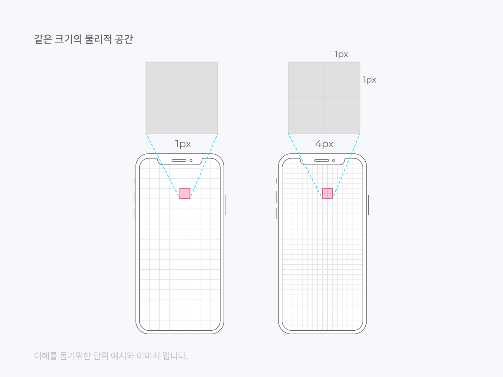
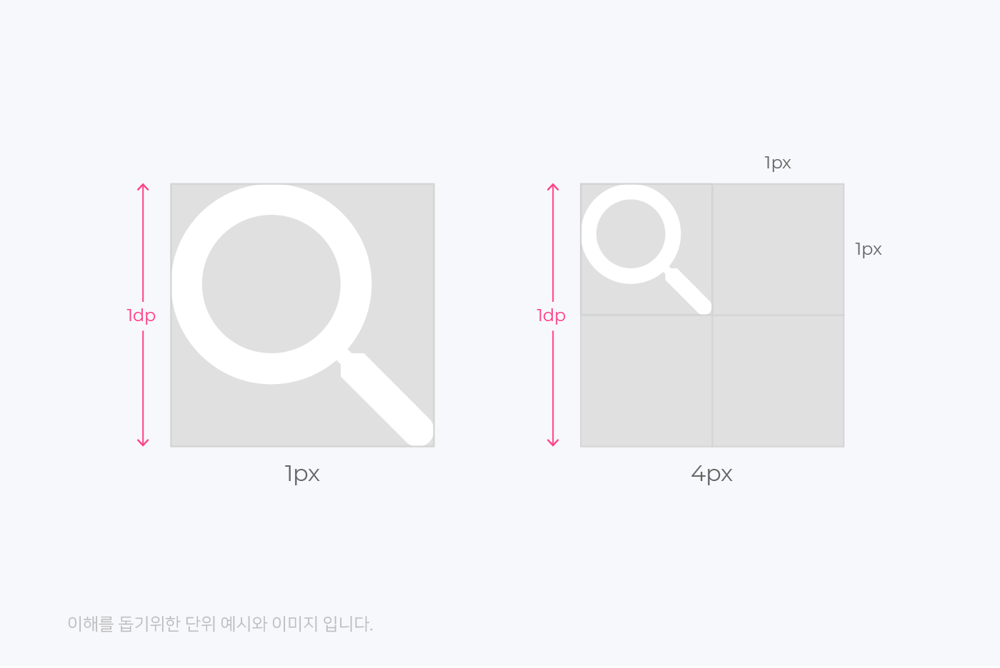
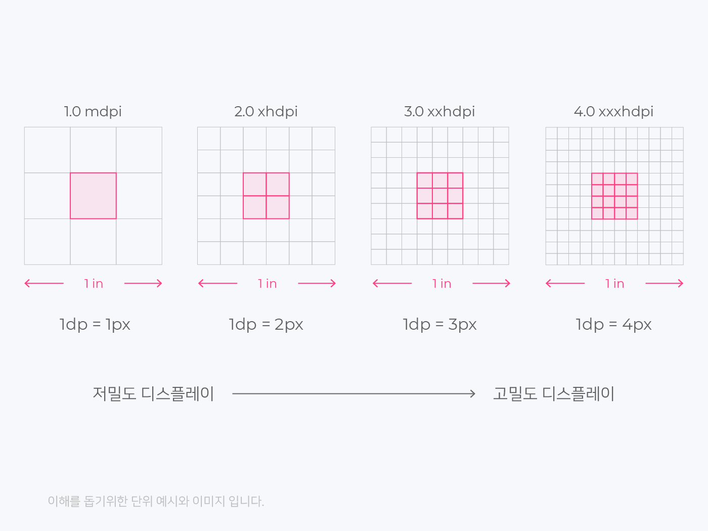
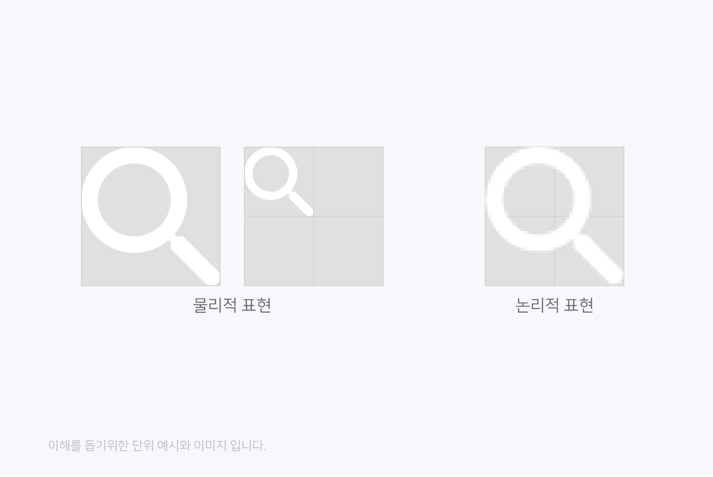
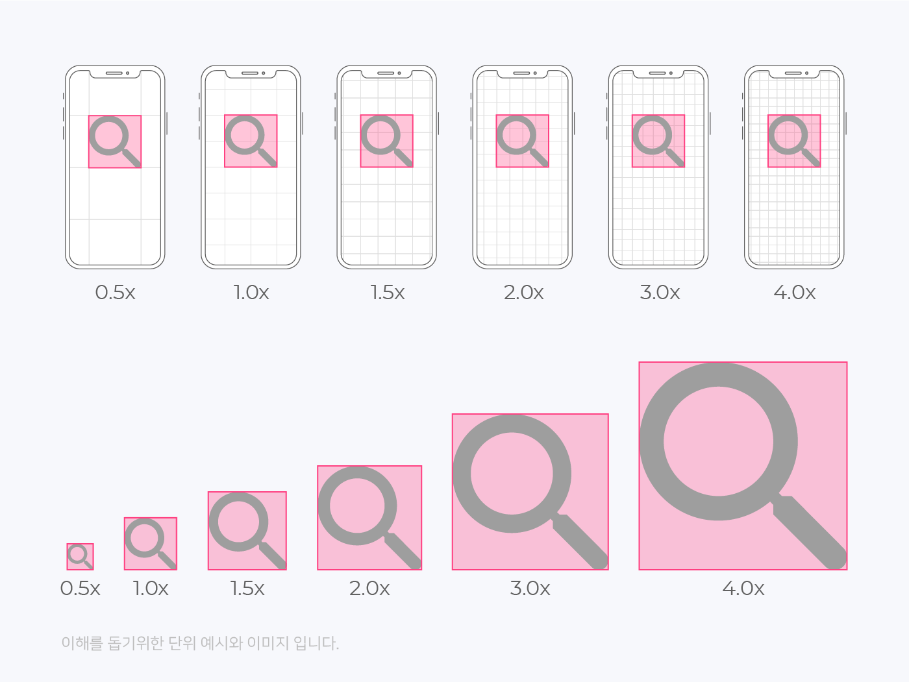

해상도에 따른 배율디자인
디스플레이 기술이 발전함에 따라 고밀도 디스플레이(레티나 디스플레이)가 등장하면서 디바이스 해상도는 발전했습니다. (래스터화 단계와 해상도의 종류 참고) 같은 크기의 물리적 공간 안에 더 많은 픽셀을 넣을 수 있게 되었고, 화면은 더 선명하게 표현할 수 있게 되었습니다.
위의 이미지를 보면 픽셀(px)크기는 정해진 크기가 아니라, 픽셀 밀도가 높을수록 픽셀 크기는 작아집니다. 아래의 이미지처럼 같은 1픽셀(px)인데, 크기가 차이나는 현상이 발생합니다. 디자인 해놓은 것들이 50% 줄어서 보이는 이유는 픽셀개념으로 디자인되었기 때문에 문제가 발생합니다.
이런 현상으로 인해 “밀도 독립적 픽셀(dp)”개념이 등장합니다.
px, dp의 개념
스크린은 픽셀(px)로 구성됩니다. 픽셀을 기준으로 디자인하면 디바이스의 픽셀 밀도(ppi = 1inch 공간 안에 표시되는 픽셀 수)로 인해 의도한 것과 다르게 작거나 크게 표시될 수 있습니다. Android에서는 어떤 화면에서도 같은 크기로 보이도록 dp(ios에서는 pt)단위를 사용합니다. 그래픽 디자인 툴은 보통 1px = 1dp로 설정되어 따로 설정을 변경할 필요는 없습니다.
 고밀도 디스플레이에서 줄어든 이미지를 dp 개념에 맞춰 강제로 크기를 늘리면 위의 이미지와 같이 이미지가 깨지는 현상이 발생합니다. (사진의 크기를 확대하면 깨지는 것과 같습니다.) 그러므로 각기 다른 디바이스에 디자인을 적용하기 위해 디자이너는 원래크기(1배)는 물론 2배, 3배, 4배의 다양한 크기로 작업해야 합니다. 효율적으로 작업하기 위해선 각각 크기별로 디자인을 따로 할 수 없고, 작은 이미지를 키우면 깨지는 현상이 발생하므로 애초에 가장 큰 이미지로 제작을 하여 각각의 디바이스에 대응을 해야 합니다.
물리적으로 보이는 이미지의 크기는 같으나 해상도는 디바이스 별로 다르므로 이미지 역시 디바이스에 맞춰서 2배, 3배, 4배… 로 작업을 해야 합니다. 다양한 이미지 작업을 해야만 해상도가 큰 디바이스에서 봤을 때 깨지는 현상을 방지할 수 있습니다. 결국 고밀도 디스플레이를 고려하여 디자인(아이콘, 이미지 등)의 픽셀 사이즈를 결정해야 합니다.
8배수 디자인
배율디자인에서 아이콘, 이미지 등의 픽셀크기가 8의 배수로 하는 것이 좋다는 이야기가 나옵니다.
왜 8의 배수의 픽셀일까요?
디바이스가 그래픽을 렌더링하는데 홀수의 경우 픽셀이 깨지게 되는 등의 어려움이 있기 때문에 짝수로 처리 되어야합니다. 8의 경우 1.5배 등과
같이 0.5배시에도 소수가 아닌 정수의 값이 유지됩니다.
각 해상도 밀도들은 0.5 : 1 : 1.5 : 2 : 3 : 4의 비율을 가지고 있습니다. 따라서 4.0 xxxhdpi 기반으로 디자인 한다면 아래와 같이 각
밀도별로 크기를 변환할 수 있습니다.
1.0 mdpi = 4.0 xxxhdpi 기반에서 디자인 한 픽셀사이즈 x 0.25
1.5 hdpi = 4.0 xxxhdpi 기반에서 디자인 한 픽셀사이즈 x 0.375
2.0 xhdpi = 4.0 xxxhdpi 기반에서 디자인 한 픽셀사이즈 x 0.5
3.0 xxhdpi = 4.0 xxxhdpi 기반에서 디자인 한 픽셀사이즈 x 0.75
4.0 xxxhdpi 기반에서 8배수에 맞춰 디자인 한 예시
4.0 xxxhdpi 기반에서 32×32px의 아이콘을 만들어 각각의 밀도로 변환(다운사이징)하면
1.0 mdpi = 8px
1.5 hdpi = 12px
2.0 xhdpi = 16px
3.0 xxhdpi = 24px 가 됩니다.
4.0 xxxhdpi 기반에서 8배수에 맞춰 디자인 하지 않은 예시
4.0 xxxhdpi 기반에서 36×36px의 아이콘을 만들어 각각의 밀도로 변환(다운사이징)하면
1.0 mdpi = 9px
1.5 hdpi = 13.5px(!)
2.0 xhdpi = 18px
3.0 xxhdpi = 27px 이 됩니다.
(!) 표시를 해둔 것은 소수점을 가지고 있다는 것을 의미합니다. jpg나 png에서 13.5px의 넓이를 갖는 이미지는 만들 수 없습니다. 만약 13.5×13.5px 크기를 가진 5개의 아이콘을 나란히 놓는다고 하면 합이 최대 67.5px가 되어야 하는데, 14px로 반올림 할 경우 70px까지 커지기 때문입니다. 3배수 기준으로 디자인 할 때에도 마찬가지입니다. 아직 1.5x 디스플레이가 존재하고 있으므로, 모든 디바이스에 대응하기 위해서는 반드시 각 크기, 간격은 8의 배수인 것이 좋습니다. 웹디자인은 가장 큰 사이즈만 제공한 후 디바이스에서 그래픽을 랜더링하기 때문에 8배수 디자인을 지키는 것이 좋습니다.
효율성을 위한 다운사이징
이론적으로는 4.0 xxxhdpi기반에서 디자인 하는 것이 맞지만 2.0 xhdpi기반에서 스마트폰 기준으로 사람이 구분 가능한 픽셀밀도인 약 430ppi를 충족하고 있으므로 효율성을 위해 2.0 xhdpi 기반에서 디자인하여 사용합니다. 다만, 확대 시에는 차이가 있습니다.
2의 배수, 4의 배수 디자인은 안 되나요?
8의 배수는 가장 큰 기본 배수고 8이 포함하는 2와 4의 배수 디자인도 물론 가능합니다. 8의 경우가 모든 디바이스의 옵션이 가능하기 때문입니다. 디자인 작업 시 꼭 8배수를 지키지 않아도 되며, 2배수, 4배수도 활용하여 유연하게 디자인 하는 것을 권장합니다. (2배수, 4배수가 불가능한 옵션인 1.5 hdpi 밀도의 주요 디바이스로는 Microsoft사의 노트북 surface시리즈가 있습니다.)